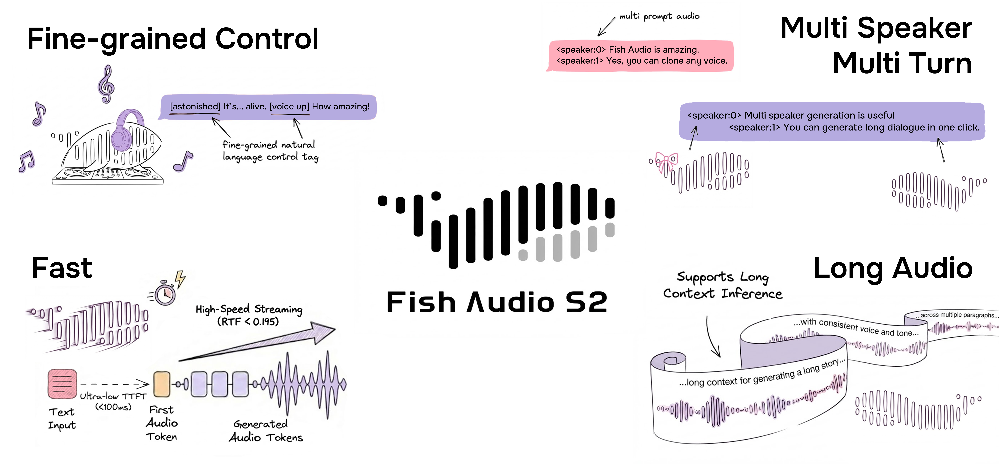

Aviso de Licença
Este repositório e todos os pesos de modelo associados são lançados sob a FISH AUDIO COMMUNITY LICENSE. Os pesos do S2-Pro continuam sob a Fish Audio Research License. Consulte LICENSE para mais detalhes.
Isenção de Responsabilidade Legal
Não nos responsabilizamos por qualquer uso ilegal da base de códigos. Consulte as regulamentações locais sobre DMCA e outras leis relacionadas.
Início Rápido
Documentação
- Instalação: configuração do ambiente, download dos pesos, implementação com Docker
- Inferência: linha de comandos, servidor API, WebUI
[!IMPORTANT] Recomendamos vivamente o SGLang-Omni a quem procura eficiência; consulte o SGLang-Omni README.
Para Agentes LLM
Leia primeiro https://speech.fish.audio/pt/install/ e siga a documentação para instalar e configurar o Fish Audio Drama 3 (ou o S2-Pro).
Modelos
| Modelo | Tamanho | Pesos | Descrição |
|---|---|---|---|
| Drama 3 | 35B-A3B (3B ativos por token) | HuggingFace | Novo modelo de topo para cenas com várias personagens e conteúdos longos, com revisão em várias rondas e edição local |
| S2-Pro | 4B parâmetros | HuggingFace | Modelo de topo da geração anterior, com inferência mais rápida |
O tipo de modelo é detetado a partir do config.json do diretório de pesos e ambos partilham a mesma linha de comandos e o mesmo servidor API.
Fish Audio Drama 3
O novo modelo de voz, com uma atualização completa face ao S2-Pro.
Tal como a série S2, o Drama 3 suporta vários falantes, clonagem de voz e controlo por linguagem natural, mas dá um salto claro no tratamento de áudio longo, na forma de interação e na editabilidade.
Principais funcionalidades
- Revisão em várias rondas (direção): oriente diretamente a take anterior ("mais suave, um pouco mais triste") e o modelo regenera com esse contexto, sem recomeçar do zero.
- Preenchimento (infilling) e edição precisa: edite o áudio como edita texto, substituindo uma palavra ("quarta-feira" → "quinta-feira") e mantendo o timbre e as transições naturais.
- Cenas com várias personagens: a partir da descrição do guião, grave uma cena completa com várias personagens de uma só vez, com suporte a streaming para texto longo.
- Diálogos longos e áudio longo: pensado para gravações longas e sessões prolongadas, mantendo personagens e timbre estáveis.
- Expressividade mais forte: riso, choro, sussurros e emoção dramática deixam de ser achatados pela referência, ficando muito mais próximos de uma interpretação real.
- Clonagem de voz multilingue: estabelece um novo patamar de SOTA nas taxas de erro (CER / WER) da clonagem entre idiomas.
- Controlo por etiquetas de linguagem natural: etiquetas inline como
[whisper],[angry]e[laughing]controlam emoção e prosódia.
O que mudou face ao S2-Pro
| Capacidade | S2-Pro | Drama 3 |
|---|---|---|
| Vários falantes | Suportado | Suportado, como cenas com várias personagens |
| Clonagem de voz | Suportado | Suportado, com taxas de erro multilingue mais baixas |
| Instruções inline em linguagem natural | Suportado | Suportado |
| Edição local / preenchimento | Não suportado | Suportado |
| Revisão em várias rondas | Não suportado | Suportado |
| Conteúdo longo | Geração em blocos | Diálogos longos e áudio longo, com streaming |
| Emoção forte (riso, choro, sussurros) | Moderada | Mais forte |
Resultados
O Drama 3 dá um salto claro sobre o S2 em benchmarks públicos: clonagem de voz multilingue (MiniMax Multilingual Testset), edição de voz de forma livre (Ming-Freeform) e revisão emocional em várias rondas (Step-Audio-Edit), superando a geração anterior na precisão de controlo, nas taxas de erro multilingue (CER / WER) e na precisão de estilo.
Consulte o relatório técnico para a arquitetura, a receita de treino e os resultados completos da avaliação.
Fish Audio S2-Pro
O nosso modelo de topo da geração anterior: voz controlável por linguagem natural e emocionalmente expressiva, com cerca de uma centena de idiomas e um tamanho que cabe numa GPU de consumo.
- Instruções inline em linguagem natural: etiquetas como
[pause],[excited]e[whisper]controlam a prosódia e a emoção em qualquer ponto do texto. - Geração nativa com vários falantes: os IDs de falante separam as personagens dentro de um único texto, sem gerar e concatenar um falante de cada vez.
- Clonagem rápida de voz: 10–30 segundos de áudio de referência bastam para reproduzir um timbre.
- Passagem única: áudio longo pode ser gerado em streaming de uma só vez.
- Streaming em produção: RTF 0.195 num único H200, cerca de 100 ms até ao primeiro áudio.
Experimente a demonstração online no site do Fish Audio e leia o post do blog e o relatório técnico para mais detalhes.
Resultados de benchmark do S2-Pro (clique para expandir)
| Benchmark | Fish Audio S2 | |------|------| | Seed-TTS Eval — WER (chinês) | **0,54%** (melhor no geral) | | Seed-TTS Eval — WER (inglês) | **0,99%** (melhor no geral) | | Audio Turing Test (com instrução) | **0,515** média posterior | | EmergentTTS-Eval — Taxa de vitória | **81,88%** (mais alta no geral) | | Fish Instruction Benchmark — TAR | **93,3%** | | Fish Instruction Benchmark — Qualidade | **4,51 / 5,0** | | Multilingue (MiniMax Testset) — Melhor WER | **11 de 24** idiomas | | Multilingue (MiniMax Testset) — Melhor SIM | **17 de 24** idiomas | No Seed-TTS Eval, o S2 alcança o WER mais baixo entre todos os modelos avaliados, incluindo sistemas fechados: Qwen3-TTS (0,77/1,24), MiniMax Speech-02 (0,99/1,90), Seed-TTS (1,12/2,25). No Audio Turing Test, 0,515 supera o Seed-TTS (0,417) em 24% e o MiniMax-Speech (0,387) em 33%. No EmergentTTS-Eval, o S2 é particularmente forte em paralinguística (taxa de vitória de 91,61%), perguntas (84,41%) e complexidade sintática (83,39%).
Créditos
Relatório Técnico
@misc{fish-speech-v1.4,
title={Fish-Speech: Leveraging Large Language Models for Advanced Multilingual Text-to-Speech Synthesis},
author={Shijia Liao and Yuxuan Wang and Tianyu Li and Yifan Cheng and Ruoyi Zhang and Rongzhi Zhou and Yijin Xing},
year={2024},
eprint={2411.01156},
archivePrefix={arXiv},
primaryClass={cs.SD},
url={https://arxiv.org/abs/2411.01156},
}
@misc{liao2026fishaudios2technical,
title={Fish Audio S2 Technical Report},
author={Shijia Liao and Yuxuan Wang and Songting Liu and Yifan Cheng and Ruoyi Zhang and Tianyu Li and Shidong Li and Yisheng Zheng and Xingwei Liu and Qingzheng Wang and Zhizhuo Zhou and Jiahua Liu and Xin Chen and Dawei Han},
year={2026},
eprint={2603.08823},
archivePrefix={arXiv},
primaryClass={cs.SD},
url={https://arxiv.org/abs/2603.08823},
}
@misc{liao2026fishaudiodrama3technical,
title={Fish Audio Drama 3 Technical Report},
author={Dawei Han and Shidong Li and Shijia Liao and Jiahua Liu and Songting Liu and Qingzheng Wang and Yuxuan Wang and Xin Chen and Yifan Cheng and Tianyu Li and Gangin Park and Xuehao Yang and Chang Zeng and Haoyang Zhang and Ruoyi Zhang and Xiangyu Zhang},
year={2026},
eprint={2610.18010},
archivePrefix={arXiv},
primaryClass={cs.SD},
url={https://arxiv.org/abs/2610.18010},
}